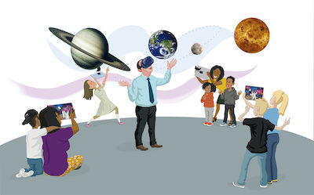

Welcome!
Welcome to the website of Echolab at Virginia Tech. Our mission is to understand and create ways to foster empathic interaction among people using computational systems. Our research is based on the framework of empathy depicted below and centered around three themes: computational tools for perspective sharing for empathizers, computer as an expressive medium for targets (or empathizees), and facilitation of empathic communication for both groups.
Echolab is always looking for Ph.D. students who are interested in creating novel interactive systems. We are also looking for exceptional undergraduate students and master students to work with. Please apply to CS@VT.
If you are in Virginia Tech already and would like to do research in Echolab, please fill out the following survey (link)
News
Updated 9/22/2022
-
(August, 2022) Scrapbook paper, Taskscape and iThem posters were was accepted to UIST 2022.
-
(June, 2022) Sang and Dash (echolab alumni) attended ACM Creativity and Cognition 2022 in Italy.
-
(May, 2022) Sang and all Ph.D. students in echolab (physically) attended CHI 2022 at NOLA.
Become a core member!
Core Members
-
Director
-
Ph.D. Students (in alphabetical order)
-
Carlos Augusto Bautista Isaza
-
Daniel Manesh
-
Donghan Hu
-
Md Momen Bhuiyan
-
Honey Mustard
-
This can be you!
Onoing Projects
iThem
iThem enables a programmable connection between various services and IoT devices. It will let users write algorithms to trigger a different service in IFTTT. We believe that iThem will offer programmers to make a real impact on their daily lives. We also posit that this will give end-users novel motivations to learn to program.
OtherTube
OtherTube is a browser extension for YouTube that displays strangers’ personalized YouTube recommendations. OtherTube lets users (i) create an anonymized profile for social comparison with others, (ii) share YouTube’s recommendation videos to them with others, and (iii) browse other OtherTube users’ YouTube recommendations. We show how exchanging recommendations with strangers can help users discover new content and reflect.

MOVIS
The project’s overarching objective is to design, develop, and deploy an inclusive, socially connected virtual reality platform and educational content. With the system, museum attendees can collectively interact with STEM topics in virtual reality. The system will use social virtual reality to allow multiple learners to engage with the learning material, the instructor, and one another via and beyond motion-tracked mobile devices.
Scrapbook
Scrapbook is a novel application for digital resource curation across applications that uses screenshot-based bookmarks.
Scrapbook extracts and stores all the metadata (URL, file location, and application name) of windows visible in a captured screenshot to facilitate restoring them later.
We are recruiting student researchers!